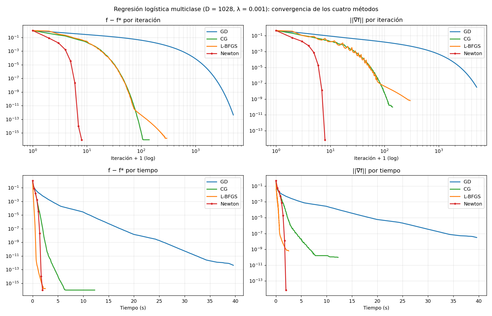
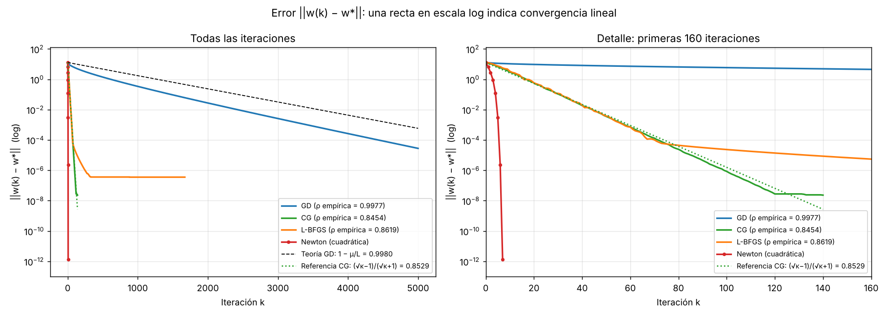

Estudio comparativo de algoritmos de optimización para el entrenamiento de redes neuronales convolucionales en la clasificación de tumores cerebrales en MRI
Proyecto final – MEMAD · Entrega III
Alumno: Gabriel Monteagudo · Código: 326056195
CUCEI, Universidad de Guadalajara
Fecha de entrega: 23 de noviembre de 2026
1. Objetivo de la semana
En la semana II el problema de optimización era el entrenamiento de una red neuronal, que no es
convexo: la teoría da pocas garantías y solo se puede observar el comportamiento de los algoritmos.
Esta semana se construye un problema convexo con los mismos datos para comparar métodos de
primer y segundo orden y contrastar sus tasas de convergencia medidas con las que predice la teoría.
2. Planteamiento del problema
Extracción de características. La ResNet-50 preentrenada en ImageNet se usa congelada,
sin su última capa: cada imagen se convierte en un vector de 2 048 números.
Reducción de dimensión. PCA ajustado solo con el conjunto de entrenamiento, a 256 componentes.
Las componentes se escalan para que la primera tenga varianza 1, sin blanquear el resto, de modo que el
problema conserve su mal condicionamiento natural. Se añade una columna de unos para el sesgo (\(d = 257\)).
Problema convexo. Regresión logística multiclase (\(K = 4\)) con regularización L2, \(\lambda = 10^{-3}\),
sobre la misma partición de las semanas anteriores (4 760 imágenes de entrenamiento). El número de
parámetros es \(D = d\cdot K =\) 1 028.
Propiedades. \(f\) es fuertemente convexa con \(\mu \ge \lambda\) (la pérdida logística es convexa y la
regularización añade \(\lambda I\)), así que tiene un único mínimo \(w^*\). Su gradiente es Lipschitz:
$$\mu I \preceq \nabla^2 f(w) \preceq L I, \qquad \mu \ge \lambda, \qquad L \le \tfrac{1}{2}\,\lambda_{\max}\!\big(X^\top X / n\big) + \lambda$$
La cota de \(L\) sale de que \(\operatorname{diag}(p) - pp^\top \preceq \tfrac{1}{2} I\). Valores medidos:
Constante
Valor
Significado
\(\mu = \lambda_{\min}\big(\nabla^2 f(w^*)\big)\)
1.00 × 10⁻³
Curvatura mínima (coincide con \(\lambda\))
\(L = \lambda_{\max}\big(\nabla^2 f(w^*)\big)\)
0.1586
Curvatura máxima en el óptimo
\(L\) (cota teórica)
0.5010
Cota usada para el paso de descenso de gradiente
\(\kappa = L/\mu\)
158.6
Número de condición en el óptimo
3. Métodos implementados
Los cuatro se implementaron desde cero (NumPy, doble precisión), parten de \(w_0 = 0\) y se detienen
cuando \(\|\nabla f\| \le 10^{-10}\), al llegar al máximo de iteraciones, a los 120 s, o si \(f\) no baja durante 20 iteraciones
(límite de la precisión de la máquina).
Método
Detalles
Costo por iteración
Convergencia teórica
Descenso de gradiente (GD)
Paso fijo \(1/L\) con la cota de \(L\)
1 gradiente
Lineal, \(\rho = 1 - \mu/L\)
Gradiente conjugado no lineal (CG)
Polak–Ribière+, búsqueda lineal casi exacta (Newton en 1D con productos Hessiana-vector), reinicio periódico
Lineal; referencia \(\frac{\sqrt{\kappa}-1}{\sqrt{\kappa}+1}\)
L-BFGS
Memoria \(m = 10\), recursión de dos lazos, búsqueda lineal de Armijo
1 gradiente + \(O(mD)\)
Lineal garantizada (BFGS completo: superlineal)
Newton
Hessiana exacta 1 028 × 1 028, sistema resuelto por Cholesky, paso amortiguado con Armijo
1 Hessiana + factorización \(O(D^3)\)
Cuadrática (local)
El notebook incluye además una verificación del gradiente y de la Hessiana por diferencias finitas y
una comparación con scipy.optimize.minimize (L-BFGS-B).
4. Resultados
4.1 Convergencia por iteración y por tiempo

Figura 1. \(f - f^*\) y \(\|\nabla f\|\) por iteración (arriba, eje x logarítmico) y por tiempo (abajo).
4.2 Tabla de resultados
Método
Iteraciones totales
Iter. hasta \(f - f^* \le 10^{-6}\)
Iter. hasta \(f - f^* \le 10^{-12}\)
Tiempo hasta \(f - f^* \le 10^{-12}\) (s)
Tiempo / iter. (ms)
\(\|\nabla f\|\) final
Val. / Test acc. (%)
GD
5 000 (máximo)
1 839
4 814
37.7
7.9
3.1 × 10⁻⁸
90.0 / 85.5
CG
140
39
80
3.8
87.6
9.7 × 10⁻¹¹
90.0 / 85.5
L-BFGS
296*
38
87
0.79
8.5
6.4 × 10⁻¹⁰
90.0 / 85.5
Newton
7
5
6
1.70
281.5
7.1 × 10⁻¹⁵
90.0 / 85.5
* L-BFGS se detuvo en la iteración 296 (2.5 s) porque \(f\) dejó de bajar durante 20 iteraciones, al alcanzar
el límite de la precisión de la máquina (ver punto 5 del análisis).
5. Teoría frente a práctica

Figura 2. Error \(\|w_k - w^*\|\) en escala logarítmica: una recta indica convergencia lineal. Las líneas
discontinuas son las tasas teóricas, ancladas en el error inicial: lo que se compara es su pendiente. La tasa
empírica \(\rho\) se estimó ajustando una recta a la segunda mitad de las iteraciones previas al límite de redondeo.
GD confirma la teoría, y muestra el costo de usar una cota de L. La tasa medida (0.99772) coincide
con \(1 - \mu/L = 0.99800\) calculada con la cota \(L = 0.501\). La curvatura real en el óptimo es \(L = 0.159\), unas 3.2 veces
menor. Con un paso basado en el \(L\) real, la teoría da \(\rho = 1 - 1/\kappa = 0.9937\), lo que equivale a unas tres veces menos
iteraciones. La garantía teórica obliga a ser conservador.
CG depende de \(\sqrt{\kappa}\), no de \(\kappa\). Su tasa medida (0.8454) sigue casi exactamente la referencia
\(\frac{\sqrt{\kappa}-1}{\sqrt{\kappa}+1} = 0.8529\) de los problemas cuadráticos (figura 2), aunque el problema no es cuadrático. Por eso
necesita 80 iteraciones frente a las 4 814 de GD para llegar a \(f - f^* \le 10^{-12}\), unas 60 veces menos. Su
punto débil es el costo por iteración (88 ms), dominado por la búsqueda lineal casi exacta, que usa unas 7
evaluaciones de gradiente y 7 productos Hessiana-vector.
Newton converge cuadráticamente. El cociente \(e_k / e_{k-1}^2\) se mantiene acotado
(entre 0.04 y 0.27) mientras el error cae de \(3\times10^{-3}\) a \(2\times10^{-6}\) y a \(1\times10^{-12}\): el número de cifras correctas
se duplica en cada paso. Alcanza \(\|\nabla f\| \le 10^{-10}\) en solo 7 iteraciones (llega a \(7\times10^{-15}\)); CG también la alcanza, pero en 140. Cada iteración cuesta
281 ms (Hessiana de 1 028 × 1 028 más factorización de Cholesky), unas 36 veces más que una de GD.
L-BFGS es el más rápido en tiempo. Llega a \(f - f^* \le 10^{-12}\) en 0.79 s, frente a 1.70 s de Newton,
3.8 s de CG y 37.7 s de GD. Necesita casi las mismas iteraciones que CG (87 frente a 80), con una tasa muy
parecida (0.862 frente a 0.845), pero cada iteración es unas 10 veces más barata (8.5 ms frente a 88 ms). La teoría
solo le garantiza convergencia lineal, y eso es lo observado. Aun así, su aproximación de la curvatura le da una
velocidad comparable a CG con búsqueda exacta.
Límite de la precisión de la máquina. Al llegar a \(f - f^* \approx 2\times10^{-16}\), L-BFGS dejó de avanzar con
\(\|\nabla f\| \approx 6\times10^{-10}\) y se detuvo en la iteración 296 por el criterio de estancamiento. La causa es numérica,
no del algoritmo:
La búsqueda lineal de Armijo compara valores de \(f\), así que no puede distinguir mejoras tan pequeñas, y la
tolerancia \(\|\nabla f\| \le 10^{-10}\) era inalcanzable para ella. Newton sí la alcanzó porque su paso completo (\(\alpha = 1\)) lleva
directamente a la solución. Sin el criterio de estancamiento, L-BFGS habría seguido hasta el límite de 120 s
sin mejorar.
Todos llegan a la misma solución. Como el problema es fuertemente convexo, el mínimo es único: los cuatro
métodos obtienen el mismo clasificador, con 90.0 % de exactitud en validación y 85.5 % en prueba. Lo que cambia es el costo
de encontrarlo. Esta exactitud es menor que la de la red entrenada desde cero en la semana II (91.4 %) y la del
modelo ajustado de la semana I (96.0 %): las características de ImageNet congeladas no están especializadas en
resonancias. Esta semana, sin embargo, la exactitud no era el objetivo.
Limitaciones
Se estudió un solo valor de \(\lambda\) y de dimensión del PCA. Como \(\mu \approx \lambda\), un \(\lambda\) menor aumentaría \(\kappa\) y la ventaja de
CG, L-BFGS y Newton sobre GD.
El costo de Newton crece como \(O(D^3)\): con \(D = 1\,028\) es manejable, pero sin el PCA (2 048 características,
\(D = 8\,196\)) cada factorización sería unas 500 veces más cara y Newton dejaría de ser competitivo.
Los tiempos se midieron en la CPU compartida de Colab y pueden variar entre ejecuciones; las iteraciones y
las tasas no dependen de eso.
6. Conclusión
En el caso convexo las predicciones teóricas se cumplen con mucha precisión: GD converge linealmente con
\(\rho = 1 - \mu/L\), CG mejora esa tasa al depender de \(\sqrt{\kappa}\) en lugar de \(\kappa\), y Newton converge cuadráticamente, duplicando las
cifras correctas en cada iteración. Sin embargo, menos iteraciones no siempre significa menos tiempo. Newton necesita
solo 6 iteraciones para \(f - f^* \le 10^{-12}\), pero L-BFGS llega antes (0.79 s frente a 1.70 s) porque cada una de sus
iteraciones es mucho más barata. En la práctica, L-BFGS ofrece el mejor equilibrio entre velocidad de convergencia y
costo por iteración.